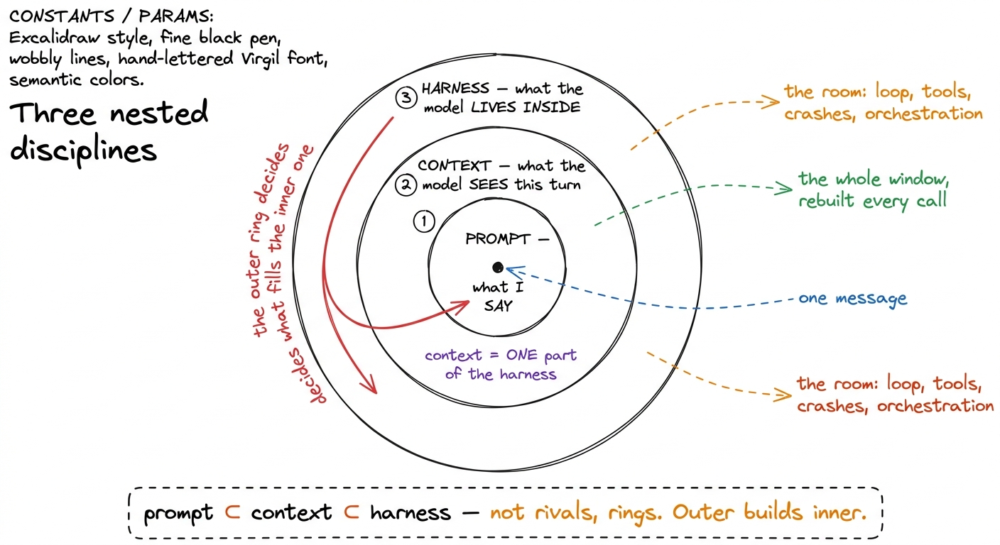
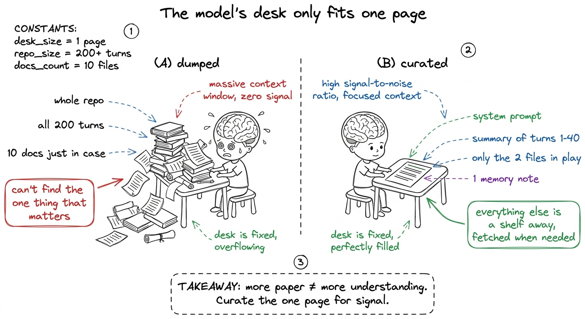
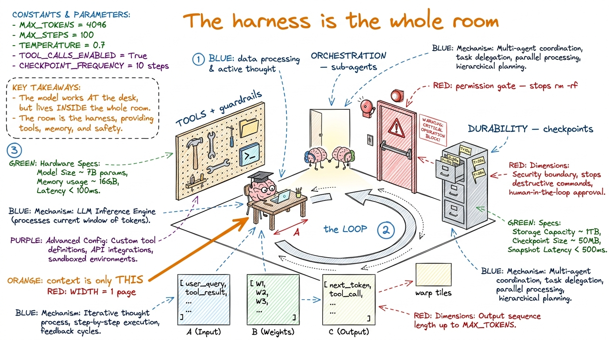
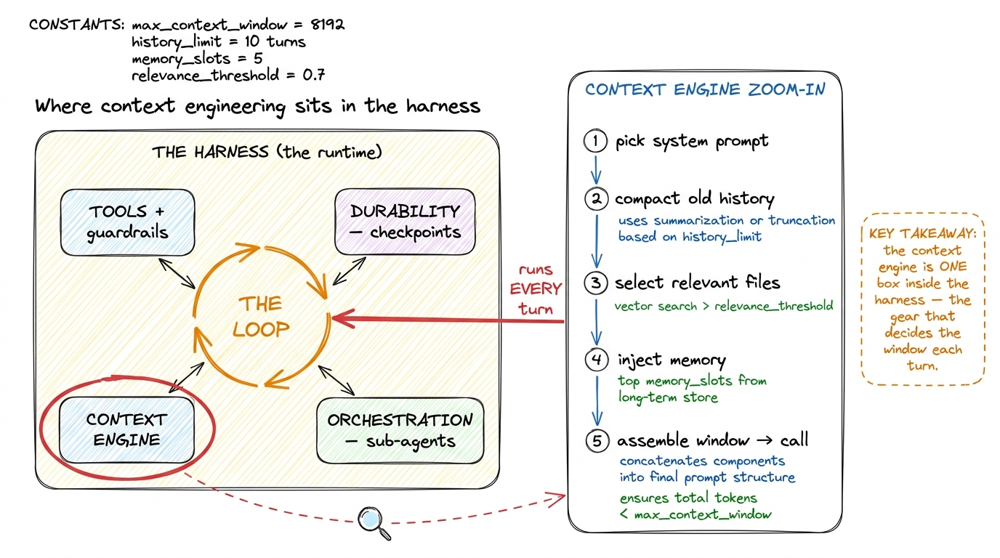
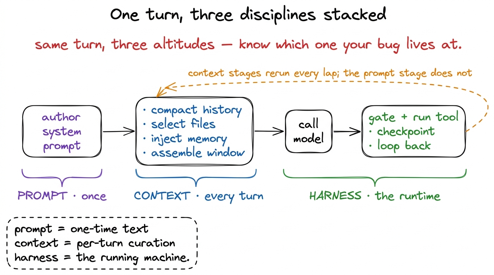

Prompt vs. context vs. harness, simply
By the end of this chapter you can stand at a whiteboard and teach the single most clarifying idea in this whole field: that prompt engineering, context engineering, and harness engineering are three nested circles, not three rivals — and you can show students exactly which circle their bug lives in. This is the chapter that stops a room from ever again saying "I tuned my prompt" when they mean "I rebuilt my agent." Own this boundary and everything in the rest of the workshop clicks into place behind it.
We start with zero jargon. Just three words, drawn as three rings, and a story about who does what.
The one-sentence spine
There are three questions, and they nest inside each other like Russian dolls:
- Prompt engineering asks: what do I say? (one message, one answer)
- Context engineering asks: what does the model see this turn? (the whole window, rebuilt every call)
- Harness engineering asks: what does the model live inside? (the loop, the tools, the crashes, the whole machine)
The prompt sits inside the context. The context sits inside the harness. Each outer ring builds and manages the ring inside it. That is the entire chapter in one breath.

figure rendering · The core picture: a bullseye where the prompt is the dot, the contextRing 1: the prompt — what you say, for one answer
The innermost dot is the oldest and the narrowest. Prompt engineering is writing a single instruction so that one model answer comes out well. You are shaping the text of one call: the wording, the examples you show, the format you ask for, the role you assign.
"Think step by step." "Return only JSON." "You are a senior Python reviewer." Every one of those is prompt engineering. It is real, it matters, and inside a coding agent the system prompt is a genuine lever you will tune with care.
"sort this list". Prompt B: "You are a careful Python engineer. Sort this list ascending. Return ONLY the sorted list, no prose." Same model, same list [3, 1, 2]. Prompt A might give you a paragraph explaining sorting; Prompt B gives you [1, 2, 3] and nothing else. That gap — from a chatty mess to a clean usable answer — is the entire value of prompt engineering, shown in ten seconds.But look at prompt engineering's horizon: it thinks about one turn only. It has no idea about a conversation that runs two hundred turns, no theory of files the model hasn't read yet, no plan for what to forget when the window fills. It can't — it is scoped to a single answer by definition.
That is exactly why it stops being enough the moment you build a loop. Once the model's output feeds a tool, whose result feeds the next call, the interesting question is no longer "what do I say?" It becomes "what does the model see on turn 47, after 46 turns have piled up?" And that question lives in the next ring out.
Ring 2: the context — what the model sees each turn
Now the middle ring, and here is the definition to burn in: context engineering is curating the best possible set of tokens the model sees on inference — every single turn. Not the prompt you wrote once. The entire assembled input on each call: the system prompt, yes, but also the running conversation history, the tool results, the files you retrieved, the memory notes, the summaries of what came before.

figure rendering · Context engineering as choosing the one page on a tiny desk: dump theWhy is this its own discipline, and a hard one? Because the context window is finite and scarce — the single most fought-over resource in the whole system. And its scarcity is not just a token count. It is a quality limit, for two reasons students need to hear plainly:
- Attention is a budget that runs out. The model relates every token to every other token. As the window fills, it spreads its attention thinner and thinner across more and more pairs. More tokens does not mean more understanding.
- Context rot is real. As the token count grows, the model's ability to recall any one specific fact buried inside that pile degrades. An instruction on turn 3 can be functionally invisible by turn 60.
1 This is the counterintuitive heart of it, so say it twice: the newcomer's reflex is to add — more files, more history, more "just in case" docs. The expert's reflex is to cut — find the smallest set of high-signal tokens that make the right answer likely. In this room, less is genuinely more, and it is measurable.
And here is the property that separates context from prompt forever: context engineering is cyclical, not one-time. Prompt engineering happens once, when you author the system prompt. Context engineering happens on every loop iteration — the window is rebuilt, or at least re-decided, before each and every call. It cannot be a thing you write and forget. It has to be machinery that runs. Which is precisely what pushes us into the outer ring.
Ring 3: the harness — what the model lives inside
The harness is the whole runtime the model lives inside: the loop, the tools, the permission gates, the durability layer, the orchestration of sub-agents. Everything wrapped around the borrowed model that turns a stateless text-in-text-out function into something that reads your code, edits files, runs tests, recovers from a crash, and stays coherent across a long task.
And now the sentence this entire chapter exists to earn:
Context engineering is one subsystem of the harness — not a synonym for it.
The harness is what does the context engineering. Walk the students through who does what: the loop decides when to call the model; the context engine decides what the window holds on that call; the tools produce the results that will or won't get appended; the durability layer persists the history that compaction later trims; the orchestrator decides whether this whole context even belongs to one agent or should be split across several. Context is one gear. The harness is the machine.

figure rendering · The harness drawn as a room: the model sits at the one-page desk (cont
figure rendering · Zooming into the harness: the context engine is a single subsystem amoThis nesting is not pedantry. It literally changes what you reach for when something breaks — and that is the practical payoff you sell to the room:
- The model gives a bad answer to a clean, single request? That's a prompt problem. Fix the wording.
- The model had the right info available but ignored it, or ran out of room, or hallucinated because the relevant file was never on the desk? That's a context problem. Fix what it sees.
- The agent ran
rm -rf, or died and lost all its work, or spun forever, or should have handed off to a sub-agent? None of those are the prompt or the context. Those are harness problems, and no amount of prompt-tuning will ever touch them.
Reading all three off one real trace
This is the demo that makes it concrete. Put one turn of a real coding agent on the board — turn 47 of fixing a failing test — and point at each discipline in the same object.
── THE HARNESS decides: model asked for no final answer yet
→ run another lap. (loop + orchestration)
── THE CONTEXT ENGINE assembles the window for this call:
system_prompt # authored once → PROMPT engineering
compacted_summary # turns 1–40 → 400 tokens
recent_messages # turns 41–46 kept verbatim
open_files # ONLY test_auth.py + auth.py, not the repo
memory # 3 lines from CLAUDE.md
→ this selection, every turn, IS context engineering.
── THE MODEL is called on exactly those tokens. It replies:
"run_bash: pytest test_auth.py -k login"
── THE HARNESS runs the tool behind a permission gate,
appends the result, checkpoints, loops. (tools + durability)Everything the agent says to the model is prompt engineering. Everything about what the model sees this turn is context engineering. Everything about the loop, the gate, the checkpoint, the file selection running as code is the harness. Same trace, three altitudes. This is exactly how Claude Code, Cursor, and pi actually run.

figure rendering · One lap read at three altitudes: the prompt is authored once, the contIn production, today
The 2-hour lecture plan (7:00–9:00 AM IST)
A block-by-block plan for the morning. This is a concepts lecture with one small live trace, so pace it with the board, not slides.
Block 1 — The bullseye (7:00–7:30). Open cold: "Three words get used as if they're the same job. They're not, and the confusion costs people weeks." Draw the bullseye live, saying the three questions as you draw. Define ring 1, the prompt, and do the tiny live before/after ("sort this list" vs. the shaped prompt). Checkpoint: "What is the one thing prompt engineering can never see?" (Any turn but this one.)
Block 2 — The desk that fits one page (7:30–8:10). Ring 2. Draw the exam-desk, dumped vs. curated. Introduce the two quality limits — attention runs out, context rot is real. Land the 200K-vs-20K aha. Hammer that context is cyclical. Checkpoint: "Which is smarter — a 200K window 95% full of junk, or a 20K window that's exactly right? Why?"
Block 3 — The room, and the live trace (8:10–8:50). Ring 3, the harness. Say the load-bearing sentence: "context engineering is one subsystem of the harness." Draw the room and the zoom-in. Run the demo: write the turn-47 trace and tap each ring by name. Finish with the debugging test. Checkpoint — the whole lecture in one question: "The agent just ran rm -rf /. Which ring is the bug in?" (Harness. Not the prompt.)
Block 4 — Consolidate + bridge (8:50–9:00). Recite the spine: prompt ⊂ context ⊂ harness — one sentence, one turn, one machine. Bridge forward: "We've built the innermost mechanics, the bare loop. Next we give the agent hands: tools."
You can now teach
- The three nested rings — prompt ⊂ context ⊂ harness — drawn as a bullseye, and the three questions (say / see / live inside) that define them.
- Prompt engineering as one message for one answer, with the tiny before/after, and why its one-turn horizon makes it not-enough for an agent.
- Context engineering as the exam-desk that fits one page: curation under scarcity, the attention-runs-out and context-rot limits, and the 200K-vs-20K aha.
- Why context is cyclical (reruns every turn) while the prompt is authored once.
- The load-bearing sentence — context engineering is one subsystem of the harness — and the zoom-in that shows it as one gear in the machine.
- The debugging payoff: reading a real turn-47 trace at three altitudes, and using "the layer you edit tells you the discipline" to route any bug to its ring.